досвід
14
років
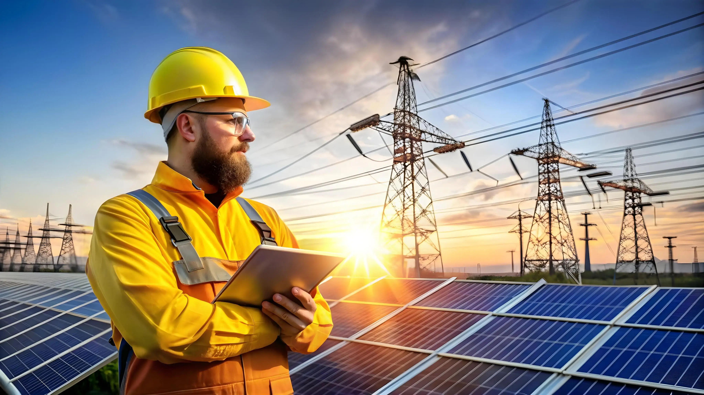
Історія Radiant Energy почалася у 2010 році, коли троє друзів вирішили об’єднати свої знання в енергетиці й технологіях і відкрити власну справу зі встановлення сонячних панелей. Вони бачили, що попит на відновлювану енергію росте, і хотіли зробити свій внесок у боротьбу зі зміною клімату.
Спочатку компанія працювала з невеликими приватними замовниками й ставила панелі на дахи будинків. Перші роки були непростими: ринок тільки формувався, і багато людей сумнівалися, чи варто вкладатися в сонячну енергію. Але команда не здавалася: проводила семінари й виставки та пояснювала, чим сонячні панелі вигідні.
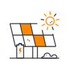
Власна сонячна електростанція робить вас менш залежними від постачальників електроенергії та стрибків цін на ринку.
Сонячні панелі помітно зменшують витрати на електроенергію, а іноді й повністю покривають потреби будинку чи бізнесу.
Сонячна енергія — чисте й відновлюване джерело, яке не забруднює повітря шкідливими викидами.
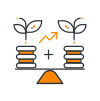
Сонце — стабільне джерело енергії, яке не залежить ні від запасів викопного палива, ні від політичної чи економічної ситуації.
Після встановлення обслуговування панелей коштує небагато. Сучасні системи служать довго й майже не потребують догляду.
Сонячна система може підвищити вартість вашої нерухомості, адже для покупців це вагома перевага.
Потрібна сонячна енергія для житлового будинку чи для віддаленого місця без електромережі — ми запропонуємо вам найсучасніші й найкращі технології.
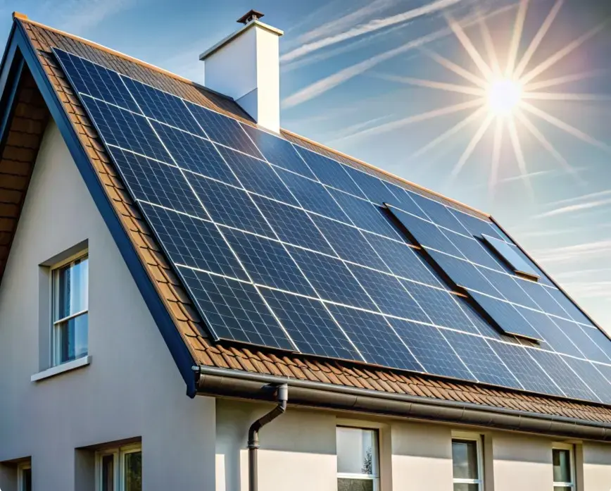
Під’єднайте сонячні панелі до звичайної електромережі, щоб менше залежати від традиційних джерел енергії та зменшити рахунки за світло.
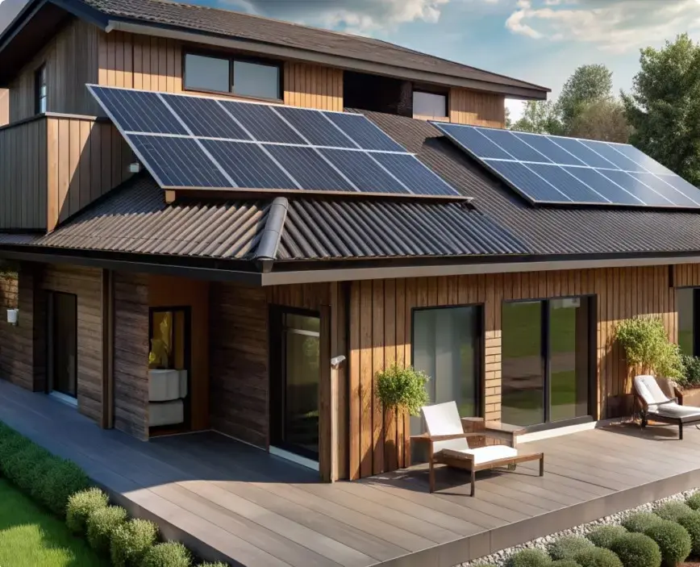
Поєднайте сонячні панелі з накопичувачем енергії, і ваш дім матиме світло навіть під час відключень.
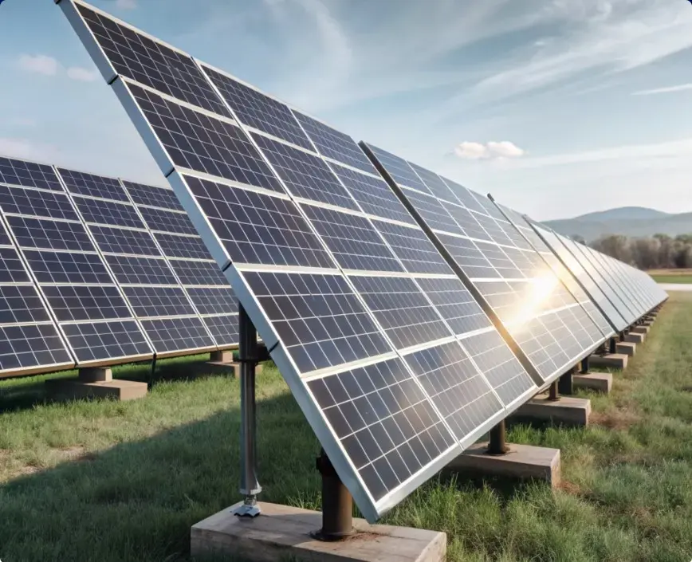
Повна енергетична незалежність там, де немає доступу до електромережі. Наші панелі дадуть вам чисту й надійну енергію.
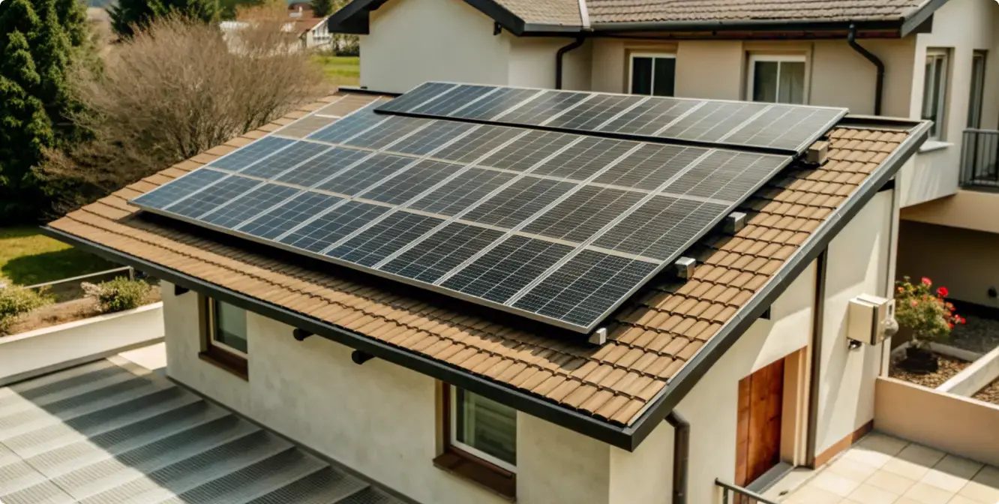
Окремий інвертор для кожної панелі дає більше енергії, а система працює гнучкіше й ефективніше.
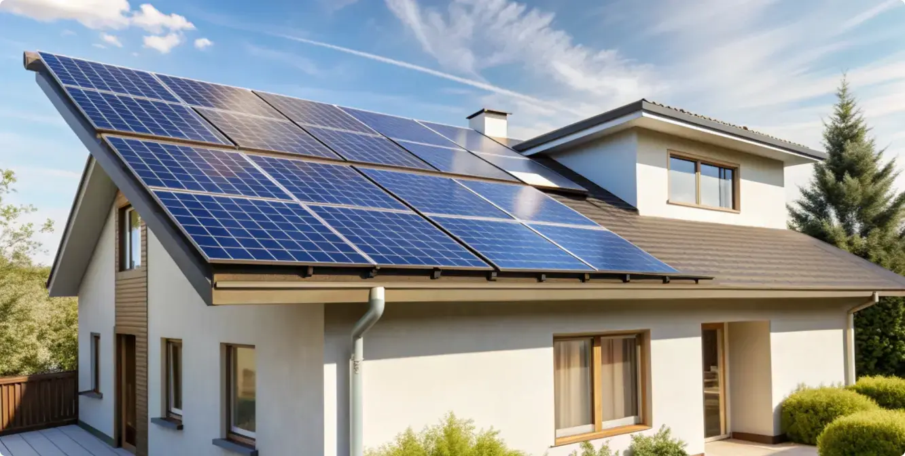
Просте й недороге рішення, яке легко обслуговувати. Ідеально підходить для будинків, де панелі майже або зовсім не затінені.
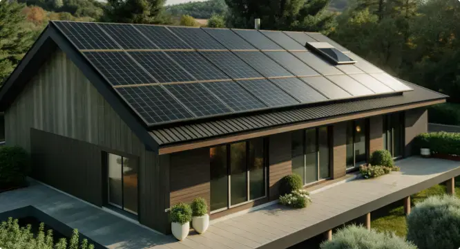
Виробляйте чисту енергію на власному даху й заощаджуйте місце на ділянці.
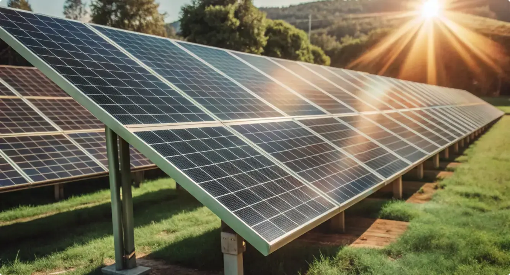
Встановіть панелі на землі, щоб вони отримували максимум сонця й працювали якнайефективніше.
Для сонячної установки потрібні не лише панелі, а й додаткове обладнання. Наші комплекти містять усі основні компоненти, щоб ви могли швидко запустити систему.
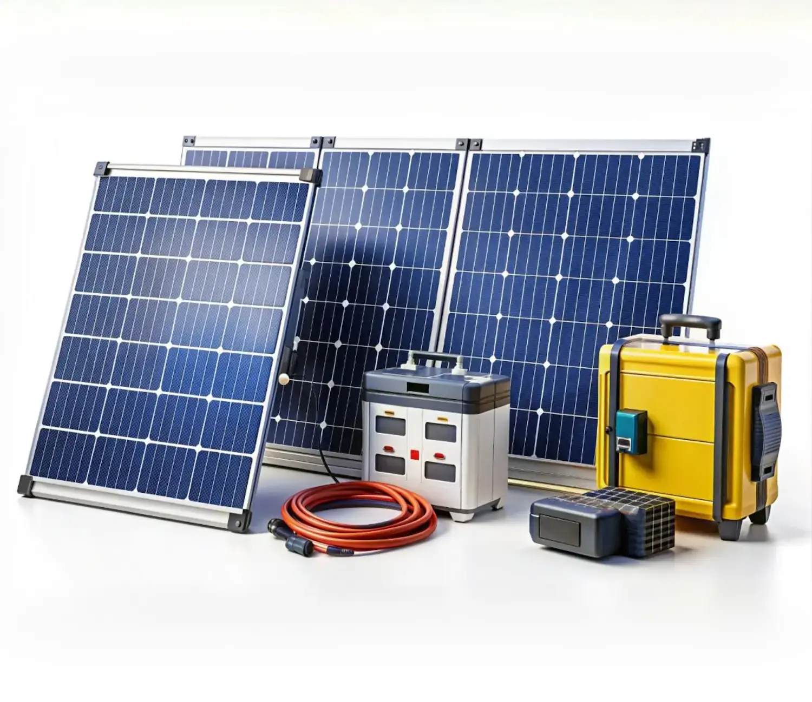
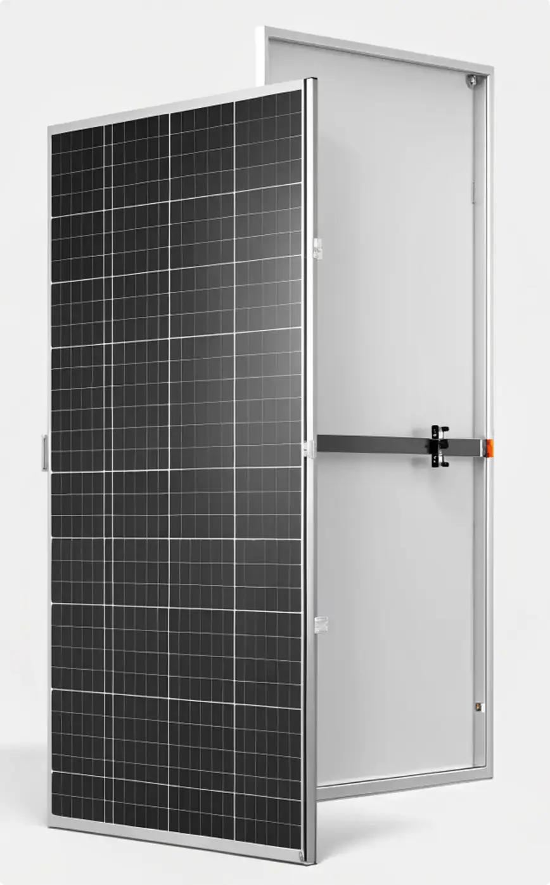
Перетворюють сонячне світло на електроенергію.
Інвертор перетворює постійний струм на змінний — той, що використовується в будинку.
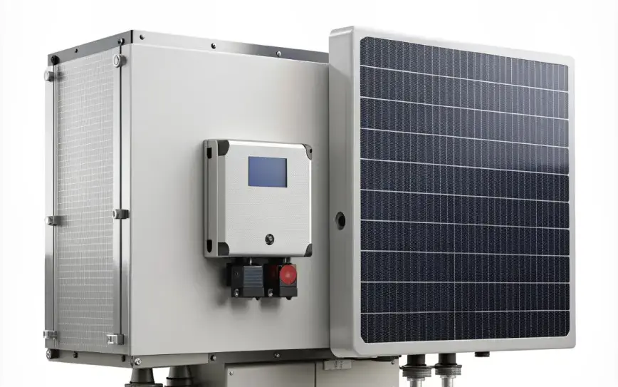
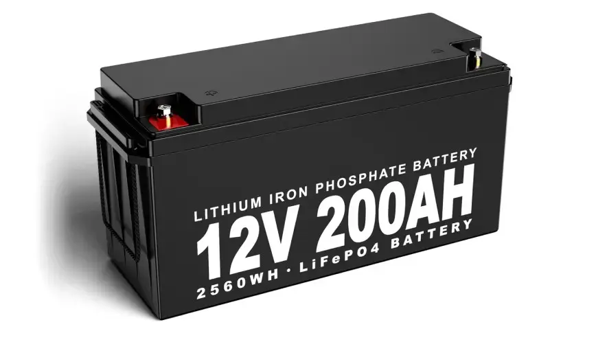
Під час відключень акумулятор стає резервним джерелом живлення і забезпечує електрикою найважливіші прилади.
Міцна й надійна опора для сонячних панелей.
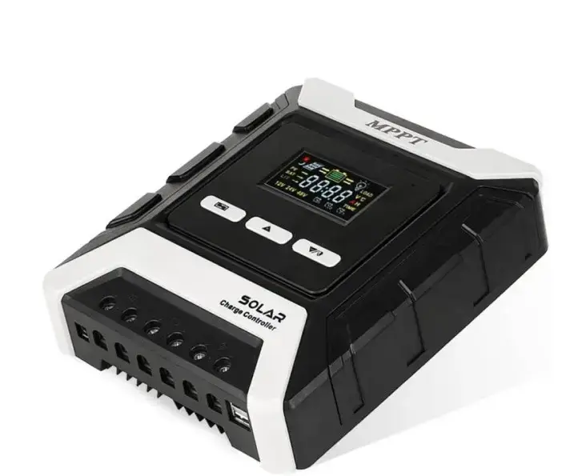
Стежте за виробництвом сонячної енергії в реальному часі.
Готові підібрати сонячну систему для свого будинку?
Спершу дайте відповідь на кілька коротких запитань анкети. Потім ми розробимо схему розміщення панелей, порекомендуємо систему під ваше енергоспоживання і підготуємо індивідуальну пропозицію.
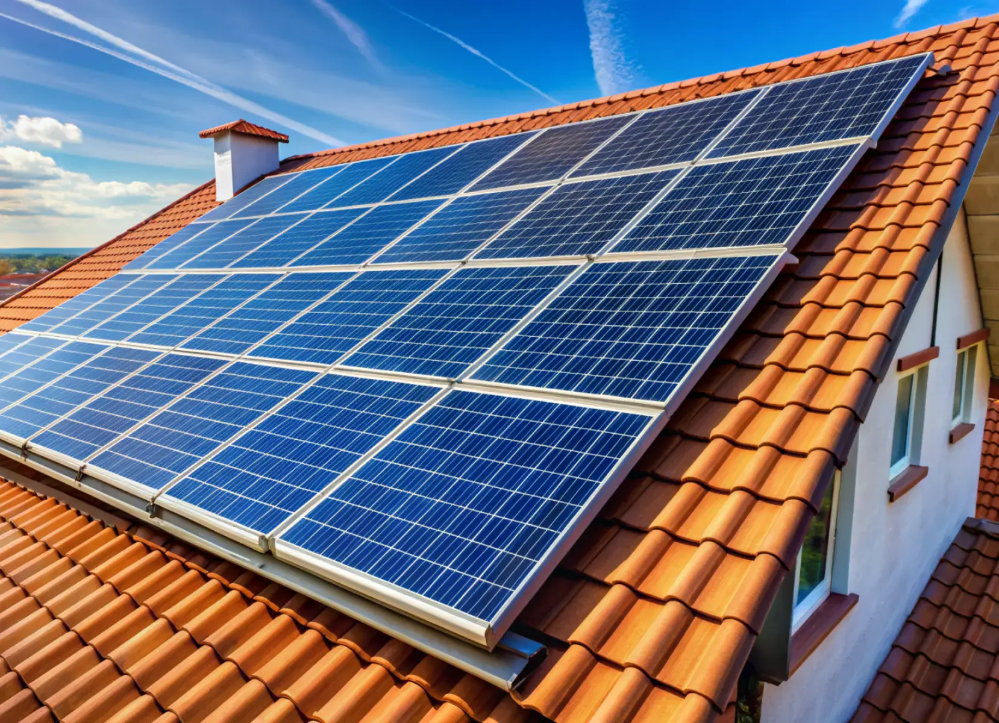
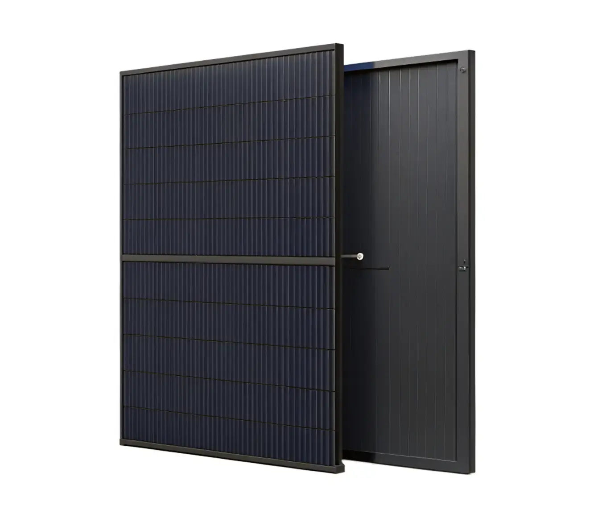
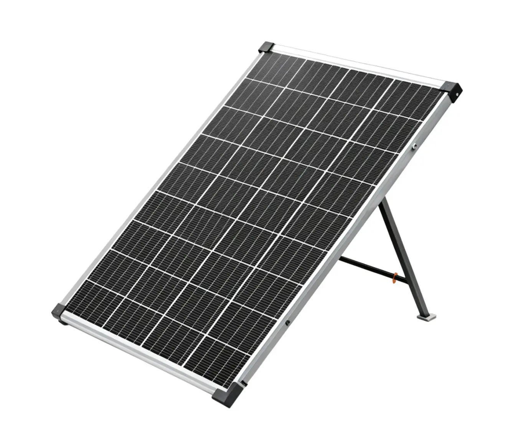
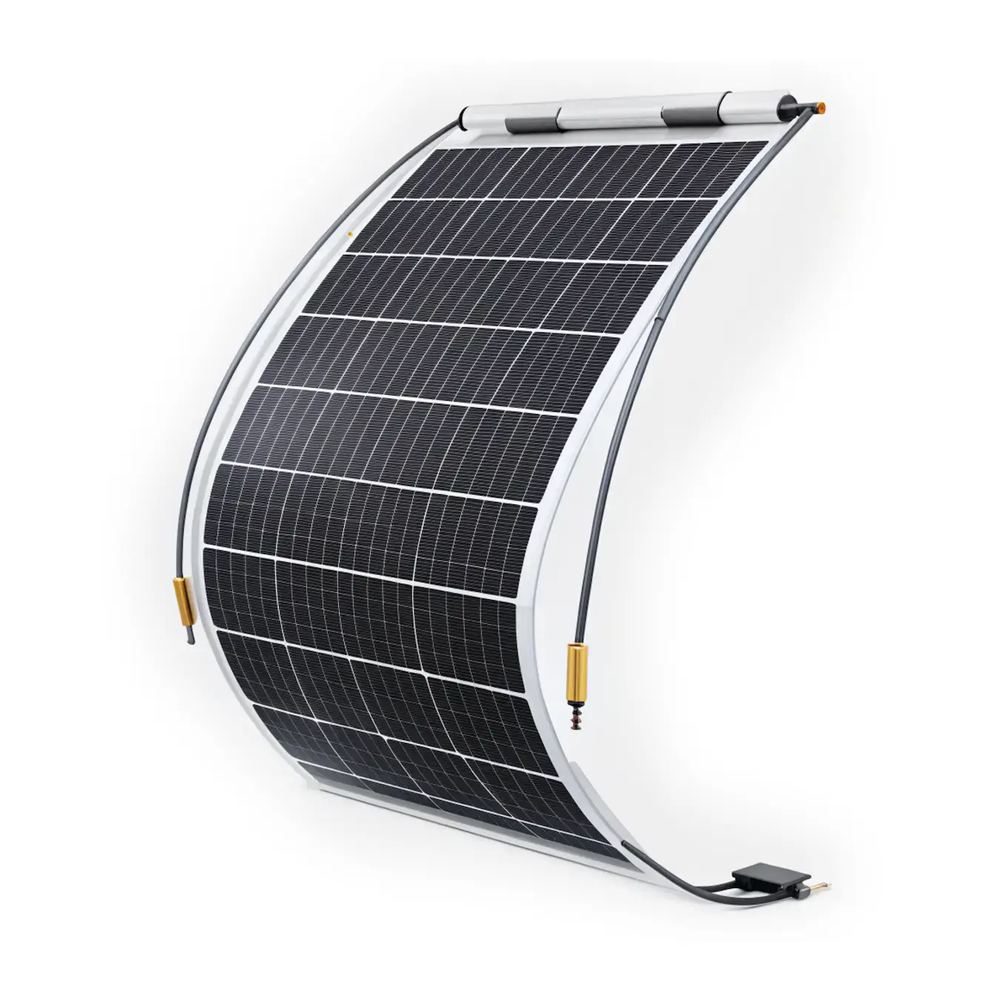
Ми хочемо вивести сонячну галузь на новий рівень. Тому робимо своє виробництво енергоефективнішим: це знижує витрати й шкоду довкіллю, а нашим клієнтам дає вигоду в довгостроковій перспективі. Свою впевненість у якості ми підтверджуємо тривалою гарантією на продукцію.
Екологічність — основа всього, що ми робимо. Наші об’єкти живляться від власних сонячних панелей та інших чистих джерел енергії. Ми думаємо про весь життєвий цикл продукції, використовуємо матеріали, які можна переробити, і зменшуємо енергоспоживання. Ми дотримуємося суворих німецьких стандартів сталого й відповідального виробництва.
Radiant Energy не просто виробляє сонячні панелі — ми будуємо екологічніше майбутнє. Поєднуючи нові технології, високу якість і турботу про довкілля, ми наближаємо світ, у якому енергія надходить із відновлюваних джерел.
Radiant Energy — провідний німецький виробник сонячних модулів, для якого понад усе точність і надійність. Ми використовуємо передові технології й постійно шукаємо нові рішення для сонячної енергетики.
На наших сучасних заводах розумна автоматизація допомагає збирати панелі точно й без помилок. Якість для нас — головне: кожна панель має бути першокласною за ефективністю, довговічністю та продуктивністю. Тому ми ретельно перевіряємо продукцію на кожному етапі.
Сонячні панелі працюють завдяки фотоелектричному ефекту: світло перетворюється на електричну енергію. Основа панелі — сонячні елементи з напівпровідникових матеріалів, найчастіше з кремнію.
Сонячне світло (фотони) падає на сонячний елемент, що складається з двох шарів напівпровідника. В одному шарі є надлишок електронів (n-шар), в іншому — їх нестача (p-шар).
Фотони передають свою енергію електронам у матеріалі, і ті відриваються від атомів.
Через різницю зарядів між n-шаром і p-шаром виникає електричне поле, яке змушує вільні електрони рухатися в одному напрямку.
Рух електронів в одному напрямку — це електричний струм. Цей постійний струм (DC) можна одразу використовувати для живлення пристроїв або перетворити інвертором на змінний (AC) для побутових потреб.
Вироблену енергію можна використовувати одразу або зберігати в акумуляторах на потім.
Щоб зрозуміти, чи підходить ваш будинок для сонячних панелей, зверніть увагу на кілька факторів:
Що більше сонця отримує будинок протягом року, то ефективніше працюють панелі. У регіонах з великою кількістю сонячних днів вони виробляють більше енергії.
Найкраще, коли дах дивиться на південь: так панелі отримують максимум сонця протягом дня. Схід або захід теж підходять, але ефективність буде нижчою.
Ідеальний нахил даху залежить від широти. В Україні оптимальний кут — приблизно 30–40 градусів. Пласкі дахи теж підходять, але панелі можуть давати менше енергії.
Перевірте, чи не падає на дах тінь від дерев, сусідніх будинків чи інших об’єктів. Тінь помітно знижує ефективність панелей. Важливо, щоб вони отримували пряме сонячне світло щонайменше 4–6 годин на день.
Дах має бути в доброму стані, адже панелі зазвичай ставлять на 20–30 років. Якщо дах потребує ремонту, краще зробити його до встановлення.
Для панелей потрібне місце. Одна панель займає близько 1,6–2 м², а для достатньої генерації знадобиться кілька панелей. Що більша вільна площа даху, то більше енергії можна отримати.
Оцініть, скільки електроенергії ви споживаєте в середньому. Що більше споживання, то більше панелей знадобиться. Якщо потреби високі, варто розглянути потужнішу систему.
Сонячні панелі потребують початкових вкладень. Дізнайтеся про місцеві програми підтримки, податкові пільги та інші способи знизити вартість. І порахуйте, за скільки років вкладення окупляться завдяки економії на електроенергії.
Якщо ваш будинок відповідає цим умовам, сонячні панелі можуть стати ефективним і вигідним рішенням.
Це залежить від кількох факторів: потужності системи, орієнтації та нахилу панелей, кількості сонця у вашому регіоні та ефективності самих панелей.
Потужність панелі вимірюється у ватах (Вт). Звичайні панелі для дому мають потужність 300–400 Вт. Що більше панелей, то більше енергії.
Кількість сонячного випромінювання залежить від регіону. Її вимірюють у кіловат-годинах на квадратний метр на рік (кВт·год/м²/рік). В Україні цей показник становить 1000–1400 кВт·год/м² на рік залежно від місця.
Ефективність більшості сучасних панелей — від 15% до 22%. Частина енергії також втрачається в інверторах, кабелях або через тінь на панелях.
Кількість панелей залежить від площі даху. Що більше панелей, то більше енергії.
Припустімо, ви плануєте систему потужністю 5 кВт (це приблизно 10–15 панелей) і живете в регіоні із сонячним випромінюванням 1200 кВт·год/м² на рік. Для спрощеного розрахунку візьмемо коефіцієнт системи близько 80% з урахуванням втрат. Тоді річна генерація становитиме: 5 кВт × 1200 кВт·год/кВт × 0,8 = 4800 кВт·год на рік. Це приблизна кількість електроенергії, яку ваша система виробить за рік.
Українська сім’я в середньому споживає від 3000 до 5000 кВт·год на рік. Тож система на 5 кВт може покрити значну частину ваших річних потреб, а то й усі.
Щоб точніше оцінити генерацію для вашого будинку, треба врахувати розмір даху, затінені ділянки, місцеву погоду та інші параметри.
Сонячні панелі можуть підвищити ціну вашого будинку під час продажу. Наскільки — залежить від ринку нерухомості, ситуації в регіоні та якості системи. Ось що варто врахувати:
Так, сонячні панелі вважаються дуже безпечними. Але, як і з будь-якою технологією, для безпечної роботи варто знати кілька речей:
У панелях немає рухомих частин, і вони виробляють електрику без нагрівання, тому ризик пожежі мінімальний. Небезпеку можуть створити лише неправильний монтаж або несправні інвертори та проводка.
Щоб зменшити ризики, довіряйте встановлення сертифікованим фахівцям із досвідом.
Панелі виробляють постійний струм, який може бути небезпечним, якщо поводитися з ним необережно. Тому системи мають вбудований захист, наприклад вимикачі та блокатори зворотного струму, які запобігають ураженню електрикою.
Інвертори, що перетворюють постійний струм на змінний для побутових приладів, також потрібно встановлювати із запобіжниками та захисними механізмами.
Якщо система має акумулятори, є певний ризик перегрівання або займання літій-іонних батарей. Але сучасні системи захищені від перегріву, перезаряджання та короткого замикання.
Акумулятори варто встановлювати в добре провітрюваних місцях, подалі від прямого сонця та вологи.
Під час роботи сонячні панелі не виділяють шкідливих речовин чи випромінювання, тому вони безпечні для людей і тварин.
Наприкінці терміну служби (близько 25–30 років) панелі треба правильно утилізувати, адже деякі компоненти, наприклад важкі метали в акумуляторах, можуть шкодити довкіллю.
Панелі розраховані на сильний вітер, град і дощ. Вони ударостійкі й зроблені з міцних матеріалів, тому служать довго.
Як і будь-яке електрообладнання, сонячні системи потребують захисту від блискавки. Якщо систему встановили професійно, захист від стрибків напруги в ній зазвичай уже є.
Нетто-облік (або нетто-метринг) — це механізм, за якого власники сонячних електростанцій (СЕС) віддають надлишок електроенергії в мережу й отримують за це компенсацію. Так можна краще використовувати енергію, зменшити рахунки й зробити сонячну установку вигіднішою.
Удень ваша установка може виробляти більше енергії, ніж ви споживаєте. Завдяки нетто-обліку цей надлишок іде в загальну електромережу.
Енергія, яку ви не використали, автоматично надходить у мережу, і нею можуть користуватися інші споживачі.
За кожну кіловат-годину, передану в мережу, ви отримуєте кредит, який можна використати пізніше. Так ви ніби «зберігаєте» енергію на час, коли панелі виробляють мало, наприклад уночі чи в похмуру погоду.
Коли система не покриває поточне споживання (наприклад, уночі), ви використовуєте накопичені кредити й платите менше за електроенергію з мережі.
Нетто-облік помітно зменшує рахунки за електроенергію: ви платите лише різницю між спожитою та виробленою енергією. Якщо система за певний період виробляє більше, ніж ви споживаєте, купувати електроенергію з мережі не доведеться.
Компенсація за надлишок енергії скорочує термін окупності: витрати на обладнання та монтаж повертаються швидше.
Компенсація за надлишок енергії скорочує термін окупності: витрати на обладнання та монтаж повертаються швидше.
Система працює ефективно навіть без великих акумуляторів, бо роль «сховища» для надлишків енергії виконує мережа.
Правила нетто-обліку в різних країнах і регіонах відрізняються. Десь надлишок компенсують за роздрібною ціною, а десь — за нижчим тарифом.
Перехід на сонячну енергію може суттєво заощадити гроші в довгостроковій перспективі. Скільки саме — залежить від кількох факторів:
Якщо електроенергія у вашому регіоні дорога, сонячні панелі можуть дати велику економію. Що більше ви споживаєте, то більше заощадите, користуючись власною електрикою.
Початкові витрати включають панелі, інвертор, монтаж і, можливо, акумулятори (якщо хочете мати енергію вночі чи в похмуру погоду). Ці витрати окуповуються завдяки економії на електроенергії. У середньому система окуповується за 5–10 років залежно від потужності, тарифів і наявності субсидій чи податкових пільг.
У багатьох країнах є державні програми підтримки, субсидії, пільгові кредити чи податкові знижки на сонячні панелі. Вони суттєво знижують початкові витрати. В Україні діє «зелений» тариф та інші фінансові стимули для приватних власників.
Що потужніша система (у кіловатах), то більше енергії вона виробляє і то менше ви залежите від мережі. Також важливі ефективність панелей та умови роботи: кількість сонячних годин, орієнтація панелей і відсутність тіні.
Завдяки нетто-обліку (якщо він діє у вашому регіоні) ви віддаєте надлишок енергії в мережу й отримуєте кредити, що ще більше зменшує рахунки. А «зелений» тариф в Україні дає змогу продавати надлишки за вигідною ціною, тож панелі можуть приносити не лише економію, а й прибуток.
Сонячні панелі служать довго (20–30 років) і майже не потребують обслуговування. Здебільшого їх треба лише очищати від пилу й бруду, щоб вони працювали ефективно. Це невеликі витрати порівняно з економією на електриці.
Якщо ви хочете бути повністю незалежними від мережі й користуватися сонячною енергією вночі, знадобляться акумулятори. Вони збільшать початкові витрати, але дадуть змогу заощаджувати ще більше.
Це залежить від правил вашого ТВЖ. Ось на що варто звернути увагу:
Багато ТВЖ мають правила щодо зовнішнього вигляду будинків, змін в інфраструктурі та користування спільним майном. Деякі забороняють або обмежують зовнішні конструкції, зокрема сонячні панелі, через їхній вплив на вигляд будинку чи території.
Перед встановленням треба звернутися до керівництва ТВЖ і отримати дозвіл. Можливо, знадобиться подати заяву з описом проєкту: де будуть панелі, якого вони розміру й типу. Деякі ТВЖ вимагають, щоб панелі відповідали певним вимогам до дизайну й не порушували загального вигляду території.
У деяких країнах і регіонах закони обмежують право ТВЖ забороняти сонячні панелі. Наприклад, так звані «закони про право на сонячну енергію» захищають власників, навіть якщо ТВЖ проти. Але навіть тоді ТВЖ може вимагати дотримуватися певних правил щодо вигляду чи розташування панелей.
Якщо ваш будинок має спільний дах з іншими власниками, вам може знадобитися згода всіх власників. Дах у такому разі вважається спільною власністю, і кожен має право висловитися щодо змін.
Якщо поставити панелі на даху не можна через обмеження ТВЖ, розгляньте інші варіанти: наземну установку (якщо є місце) або монтаж на гаражі чи іншій вашій споруді, на яку обмеження не поширюються.
Навіть якщо правила дозволяють панелі, варто обговорити плани із сусідами, щоб уникнути конфліктів. Поясніть, що сонячні панелі зменшують витрати на енергію й корисні для довкілля, а це добре для всіх.
Так, можете, але для цього потрібні певні навички, знання й розуміння процесу. Перш ніж вирішити, зважте кілька факторів:
Самостійний монтаж допоможе заощадити на оплаті фахівців. Встановлення — помітна стаття витрат, тож, зробивши все самі, ви суттєво зменшите загальну вартість системи.
Ви самі вирішуєте, як і коли встановлювати систему, і можете підлаштувати все під свій графік та потреби.
Якщо ви любите техніку й хочете навчитися чогось нового, самостійний монтаж може стати цікавим і корисним досвідом.
Потрібні базові знання електрики та вміння працювати з інструментами, щоб правильно встановити систему й підключити її до мережі.
Електробезпека — ключове питання. Без досвіду роботи з електрикою ризик високий: панелі виробляють постійний струм високої напруги, і неправильне підключення може призвести до ураження струмом чи пожежі. А монтаж на даху вимагає навичок безпечної роботи на висоті, адже падіння з даху — серйозна небезпека.
У багатьох регіонах для встановлення сонячної системи потрібні дозволи чи ліцензії від місцевої влади або енергокомпаній. Якщо ви плануєте під’єднати систему до мережі (для нетто-обліку), енергокомпанія може вимагати, щоб її встановлював сертифікований фахівець.
Деякі виробники панелей чи інверторів анулюють гарантію, якщо монтаж виконали не сертифіковані фахівці. Тобто якщо ви встановите систему самі й щось піде не так, можете втратити право на безкоштовний ремонт або заміну.
Професійні монтажники краще оцінять оптимальне розташування панелей, нахил даху та інші параметри, щоб система працювала максимально ефективно. При самостійному монтажі є ризик неправильно зорієнтувати чи закріпити панелі, і тоді вони вироблятимуть менше енергії.
Якщо ви плануєте під’єднати систему до загальної мережі (наприклад, для нетто-обліку), енергокомпанія може вимагати професійного монтажу й сертифікації системи.
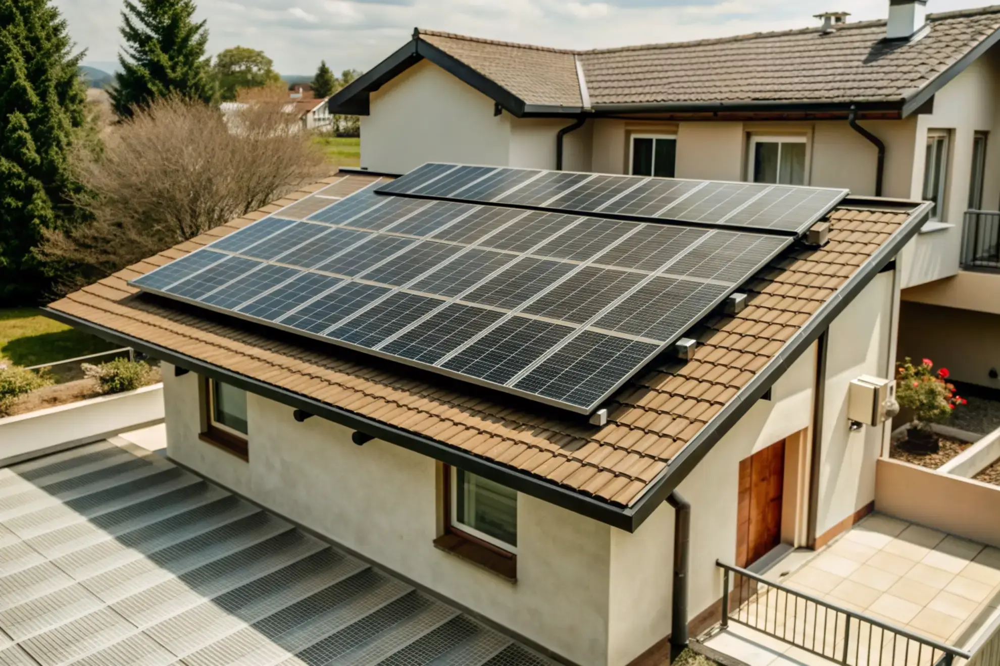
Зв’яжіться з нашими експертами й розкажіть про свої потреби та запитання
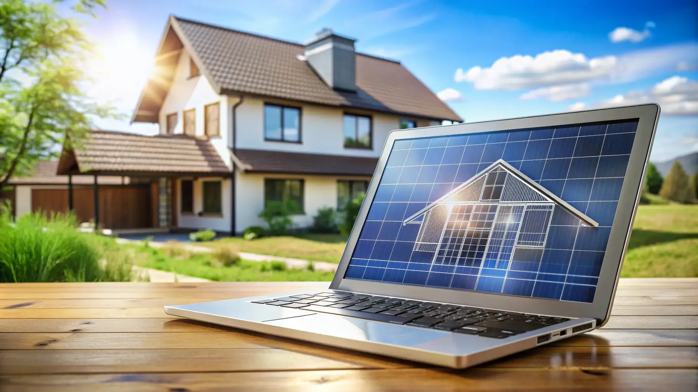
Ми вивчимо ваш проєкт, оцінимо його й розробимо систему під ваші вимоги
Доставимо комплект з індивідуальною інструкцією з монтажу та підтримкою
Встановив сонячні панелі на даху, і вони чудово працюють! Заощаджую на рахунках за світло, та й приємно знати, що користуюся чистою енергією.
Сонячні панелі перевершили всі мої очікування. Встановили їх швидко, і вони одразу запрацювали на повну потужність. Раджу всім!
Після встановлення сонячних панелей рахунки за електроенергію помітно зменшилися. До того ж приємно знати, що ми робимо свій внесок у збереження довкілля.
Із сонячними панелями наш будинок став майже незалежним від електромережі. Ми навіть продаємо надлишок електроенергії! Дуже задоволені результатом.
Панелі бездоганно працюють уже понад рік. Улітку ми повністю забезпечуємо себе електроенергією, а взимку значно економимо. Обслуговувати їх просто, і роботи мінімум. Дуже задоволена! Я вже порадила їх усім друзям і родичам.
Вирішив інвестувати в сонячні панелі, і це було найкраще рішення. Будинок став енергоефективним і подорожчав.